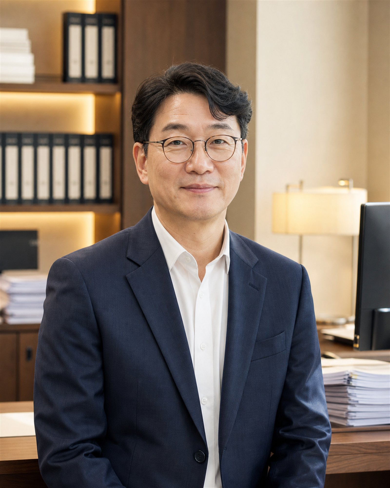

서울 강남 본사무소감사팀과 세무팀이 같은 층에 있습니다. 부문을 넘나드는 사안도 자리에서 바로 논의합니다.
DIVISIONS
외부감사 대상 법인의 재무제표 감사와 검토를 수행합니다.
법인세 · 이전가격 · 세무조사 대응까지 담당합니다.
기업 가치 평가와 구조 재편을 설계합니다.
공공기관과 비영리법인의 회계를 지원합니다.
PARTNERS

정도현 대표 파트너
AUDIT · 회계감사 총괄
빅4 감사본부 12년을 거쳐 2004년 법인 설립에 참여했습니다. 상장사 외부감사와 내부회계관리제도 검토를 총괄합니다.

서정인 파트너
TAX · 세무 자문 총괄
국세청 조사국 출신으로 세무조사 사전 진단과 대응을 맡습니다. 조세불복 단계까지 같은 담당자가 끝까지 갑니다.
PROFESSIONALS
빅4 출신 파트너 4인 · 부문별 총괄
4감사 · 자문 실무 담당 · 평균 경력 9년
22세무조정 · 조사 대응 전담
8전산 · 서류 · 고객 응대
6HISTORY
회계사 5인으로 출범
세무조사 대응 전담 조직
학교 · 의료법인 감사 개시
M&A · 실사 자문 확대
상장사 대응 체계 구축
감사 · 자문 누적 기준